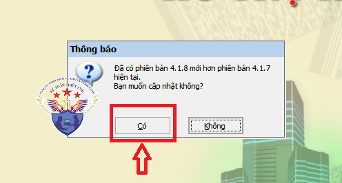
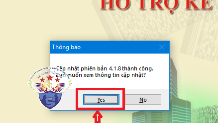
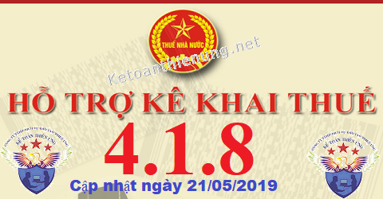

Phần mềm HTKK 4.1.8 mới nhất 21/05/2019 của Tổng cục thuế. Đây là phần mềm hỗ trợ kê khai thuế HTKK 4.1.8 mới nhất 2019. Download phần mềm HTKK 4.1.8 miễn phí tại đây.
Ngày 21/05/2019 Tổng cục thuế thông báo về việc Nâng cấp ứng dụng Hỗ trợ kê khai (HTKK) theo kiến trúc và công nghệ mới phiên bản 4.1.8
TỔNG CỤC THUẾ THÔNG BÁO
V/v: Nâng cấp ứng dụng Hỗ trợ kê khai (HTKK) phiên bản 4.1.8 đáp ứng yêu cầu nghiệp vụ và một số nội dung phát sinh
Tổng cục Thuế thông báo nâng cấp ứng dụng Hỗ trợ kê khai (HTKK) phiên bản 4.1.8 như sau:
1. Nâng cấp ứng dụng bổ sung các yêu cầu nghiệp vụ phát sinh
1.1. Cập nhật danh mục thuế tài nguyên:
- Cập nhật bổ sung thêm 02 loại tài nguyên là “Đá vôi nguyên khai” (mã 020109) và “Đất sét” (mã 020110), hiệu lực từ ngày 01/07/2016
1.2. Chức năng kê khai Báo cáo mất, cháy hỏng hóa đơn (BC21/AC)
- Cập nhật hiển thị cột ghi chú tờ khai Báo cáo mất, cháy, hỏng hóa đơn (BC21/AC): Bỏ chữ “Mất” ở các giá trị có trong danh mục cột Ghi chú.
1.3. Chức năng kê khai tờ khai quyết toán thuế thu nhập cá nhân (05/QTT-TNCN)
- Cập nhật ràng buộc tại chỉ tiêu [21] – Từ tháng trên bảng kê 05-3BK/QTT-TNCN: Kiểm tra chỉ tiêu [21] phải >= tháng 1 của năm quyết toán.
1.4. Chức năng kê khai Giấy đề nghị hoàn trả khoản thu ngân sách nhà nước (01/ĐNHT)
- Cập nhật danh mục các khoản phải nộp ngân sách nhà nước đáp ứng theo Thông tư số 324/2016/TT-BTC.
1.5. Chức năng kê khai tờ khai KHBS
- Cập nhật hiển thị Số đã kê khai và Số đã điều chỉnh tại phần [III. Tổng hợp điều chỉnh số thuế phải nộp].
1. Nâng cấp ứng dụng bổ sung các yêu cầu nghiệp vụ phát sinh
1.1. Cập nhật danh mục thuế tài nguyên:
- Cập nhật bổ sung thêm 02 loại tài nguyên là “Đá vôi nguyên khai” (mã 020109) và “Đất sét” (mã 020110), hiệu lực từ ngày 01/07/2016
1.2. Chức năng kê khai Báo cáo mất, cháy hỏng hóa đơn (BC21/AC)
- Cập nhật hiển thị cột ghi chú tờ khai Báo cáo mất, cháy, hỏng hóa đơn (BC21/AC): Bỏ chữ “Mất” ở các giá trị có trong danh mục cột Ghi chú.
1.3. Chức năng kê khai tờ khai quyết toán thuế thu nhập cá nhân (05/QTT-TNCN)
- Cập nhật ràng buộc tại chỉ tiêu [21] – Từ tháng trên bảng kê 05-3BK/QTT-TNCN: Kiểm tra chỉ tiêu [21] phải >= tháng 1 của năm quyết toán.
1.4. Chức năng kê khai Giấy đề nghị hoàn trả khoản thu ngân sách nhà nước (01/ĐNHT)
- Cập nhật danh mục các khoản phải nộp ngân sách nhà nước đáp ứng theo Thông tư số 324/2016/TT-BTC.
1.5. Chức năng kê khai tờ khai KHBS
- Cập nhật hiển thị Số đã kê khai và Số đã điều chỉnh tại phần [III. Tổng hợp điều chỉnh số thuế phải nộp].
-------------------------------------------------------------------
2. Cập nhật một số lỗi của ứng dụng HTKK 4.1.7
2.1. Chức năng kê khai tờ khai Đăng ký người phụ thuộc giảm trừ gia cảnh
- Cập nhật hiển thị cảnh báo đỏ khi nhập chỉ tiêu “MST của người nộp thuế” tại mục II. Đăng ký thay đổi về người phụ thuộc trùng với MST của cơ quan chi trả
2.2. Chức năng kê khai tờ khai Báo cáo tình hình sử dụng hóa đơn BC26AC
- Cập nhật hiển thị đúng thông tin cột số lượng trên bảng kê Mẫu 3.10 chuyển địa điểm, được tổng hợp từ tờ khai chính với dữ liệu đơn vị hàng nghìn.
2.3. Chức năng in mẫu trang bìa hồ sơ quyết toán
- Cập nhật chức năng in mẫu trang bìa hồ sơ quyết toán: sau khi in người sử dụng có thể thao tác được các chức năng khác trên ứng dụng.
2.4. Chức năng kê khai tờ khai thuế nhà thầu nước ngoài (01/NTNN)
- Cập nhật chức năng in tờ khai: cập nhật hiển thị đúng số trang và hiển thị mã vạch của tờ khai.
2.5. Chức năng kê khai tờ khai thuế thu nhập doanh nghiệp (04/TNDN)
- Cập nhật sửa lỗi in tờ khai mã vạch.
2.1. Chức năng kê khai tờ khai Đăng ký người phụ thuộc giảm trừ gia cảnh
- Cập nhật hiển thị cảnh báo đỏ khi nhập chỉ tiêu “MST của người nộp thuế” tại mục II. Đăng ký thay đổi về người phụ thuộc trùng với MST của cơ quan chi trả
2.2. Chức năng kê khai tờ khai Báo cáo tình hình sử dụng hóa đơn BC26AC
- Cập nhật hiển thị đúng thông tin cột số lượng trên bảng kê Mẫu 3.10 chuyển địa điểm, được tổng hợp từ tờ khai chính với dữ liệu đơn vị hàng nghìn.
2.3. Chức năng in mẫu trang bìa hồ sơ quyết toán
- Cập nhật chức năng in mẫu trang bìa hồ sơ quyết toán: sau khi in người sử dụng có thể thao tác được các chức năng khác trên ứng dụng.
2.4. Chức năng kê khai tờ khai thuế nhà thầu nước ngoài (01/NTNN)
- Cập nhật chức năng in tờ khai: cập nhật hiển thị đúng số trang và hiển thị mã vạch của tờ khai.
2.5. Chức năng kê khai tờ khai thuế thu nhập doanh nghiệp (04/TNDN)
- Cập nhật sửa lỗi in tờ khai mã vạch.
------------------------------------------------------------------------
Bắt đầu từ ngày 22/05/2019, khi lập hồ sơ khai thuế có liên quan đến nội dung nâng cấp nêu trên, tổ chức, cá nhân nộp thuế sẽ sử dụng các chức năng kê khai tại ứng dụng HTKK 4.1.8 thay cho các phiên bản trước đây.
----------------------------------------------------------------------
Download Phần mềm HTKK 4.1.8 tại đây:

Để cài đặt được HTKK 4.1.8, máy tính của NNT cần đáp ứng thông số sau:
- Hệ điều hành WinXP (SP2, SP3), Win 7 trở lên… (không hỗ trợ hệ điều hành iOS, Mac).
- Máy tính có cài .NET Framework 3.5 trở lên (có thể tải bộ cài .NET Framework 3.5 tại đây).
- Nếu máy tính sử dụng hệ điều hành Win 7 trở lên không phải cài đặt .NET Framework 3.5 mà chỉ cần kích hoạt .NET Framework 3.5 đã tích hợp sẵn theo tài liệu hướng dẫn cài đặt tại đây
- Hệ điều hành WinXP (SP2, SP3), Win 7 trở lên… (không hỗ trợ hệ điều hành iOS, Mac).
- Máy tính có cài .NET Framework 3.5 trở lên (có thể tải bộ cài .NET Framework 3.5 tại đây).
- Nếu máy tính sử dụng hệ điều hành Win 7 trở lên không phải cài đặt .NET Framework 3.5 mà chỉ cần kích hoạt .NET Framework 3.5 đã tích hợp sẵn theo tài liệu hướng dẫn cài đặt tại đây
-----------------------------------------------------------------------------------------------
- Mọi phản ánh, góp ý của tổ chức, cá nhân nộp thuế được gửi đến cơ quan Thuế theo các số điện thoại, hộp thư điện tử hỗ trợ NNT về ứng dụng HTKK do cơ quan Thuế cung cấp.
Tổng cục Thuế trân trọng thông báo./.
-----------------------------------------------------------------------
Trường hợp: Máy tính các bạn đã cài phần mềm HTKK 4.1.7 rồi -> Các bạn chỉ cần Bật phần mềm HTKK 4.1.7 đó lên -> Phần mềm sẽ hiển thị Thông báo cập nhật lên Phần mềm HTKK 4.1.8 -> Các bạn bấm nút "Có"

-> Tiếp đó đợi phần mềm chạy cập nhật là xong nhé:

Như vậy là các bạn đã nâng cấp xong Phần mềm HTKK 4.1.8 nhé
------------------------------------------------------------------------
